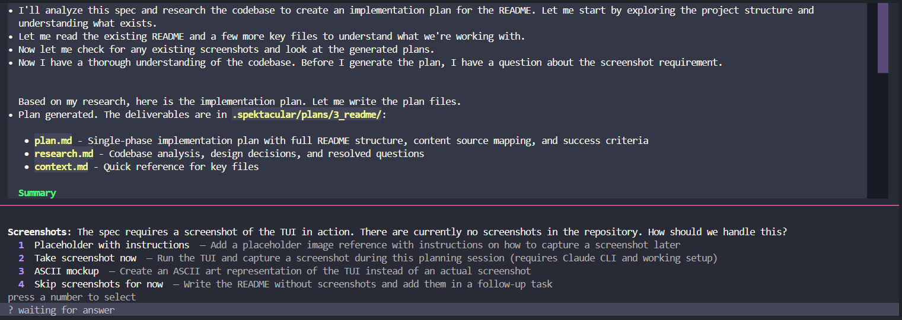

Spektacular takes a markdown specification and uses AI coding agents to plan and implement your features. Agent-agnostic. Complexity-aware. Interactive TUI.
brew install jumppad-labs/homebrew-repo/spektacular
The Spektacular TUI — real-time agent output, interactive questions, 5 colour themes

Write a spec. Spektacular plans, then implements — routing each stage to the right model and running interactively in your terminal.
Analyse scores complexity. Plan generates a detailed implementation plan scaled to the task. Implement executes the plan via a coding agent and validates the result against your acceptance criteria.
Everything you need for structured, AI-assisted planning — without locking you into a single agent or model.
Write requirements before code. Structured markdown specs drive all AI workflows and keep intent clear and reviewable.
Works with Claude Code, Aider, Cursor — bring your own coding agent. Spektacular orchestrates it, not replaces it.
Beautiful terminal UI with real-time streaming, interactive questions, and 5 built-in colour themes. Press t to cycle.
Tasks are scored 0–1 for complexity. Simple tasks route to cheap fast models. Complex tasks get the heavy hitters.
A project knowledge base feeds architecture, conventions, and past learnings into every plan. Gets smarter over time.
Apache 2.0 licensed. Build on it, extend it, run it anywhere. Contributions welcome.